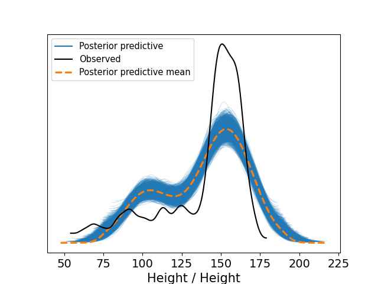
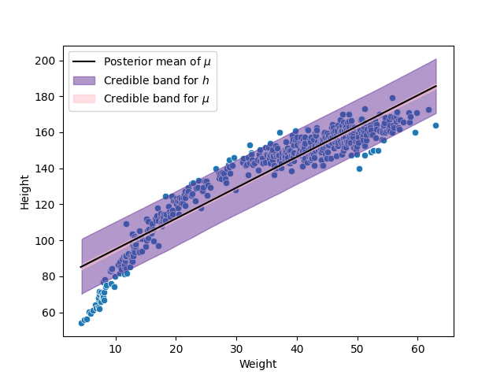
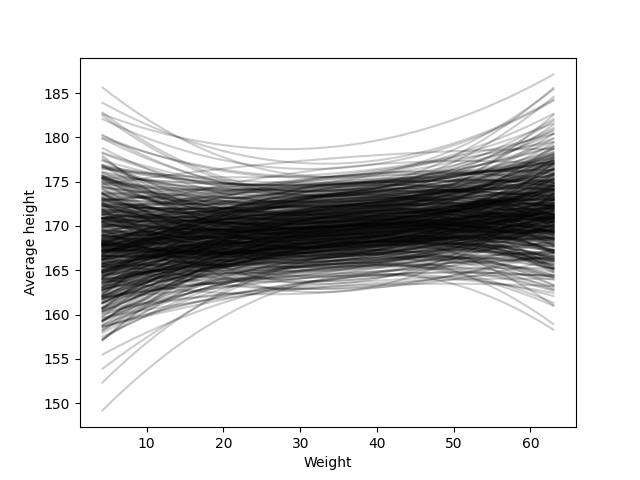
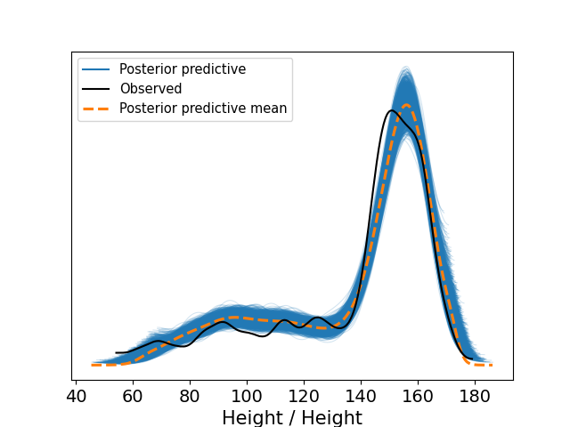
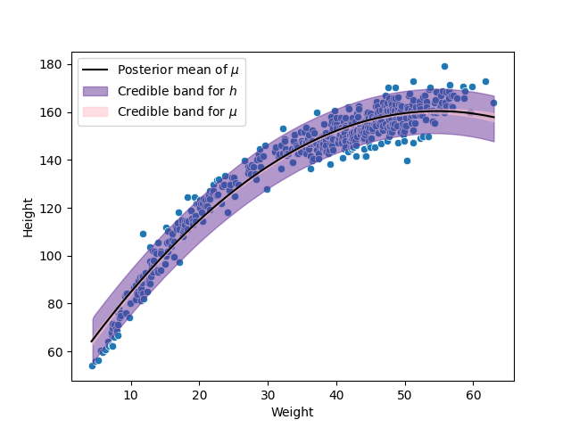
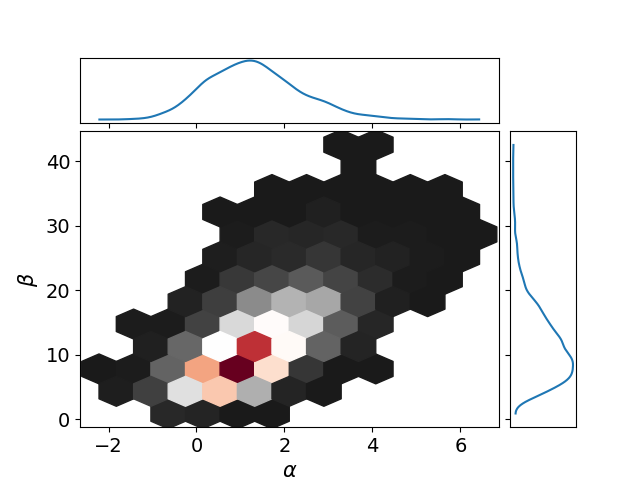
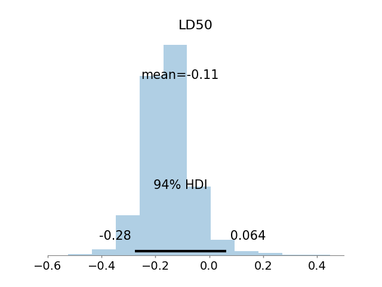

11. Quadratic approximation and MCMC#
11.1. Quadratic approximation#
It is clear that the main limitation of the grid approximation is it’s poor performance when the number of parameters increases.
As we proved in Chapter 7, under regularity conditions the posterior distribution satisfies that
Thus, we can use this normal distribution to approximate the posterior distribution. This technique is know as quadratic approximation or Laplace approximation.
11.2. Markov chain Monte Carlo, MCMC#
There are many models, like the hierarchical models in which the grid approximation nor the quadratic approximation are satisfactory. The first one, because usually there are many parameters in a hierarchical model. The second one, because hyperparameters might not be well-approximated through a normal distribution. As a result, many non-intuitive techniques have been developed. Examples of these techniques include Markov chain Monte Carlo (MCMC) or variational inference, being MCMC the most popular one. In fact, it is widely recognize that, Bayesian statistics resurrected in the 1990s thanks to MCMC. Even while MCMC is older than 1990, the required computational power is not, thus the current success of Bayesin analysis is also a success of the computational engineer.
The benefit of using advance techniques to approximate the posterior, like MCMC or variational inference, is that we scape from the odd assumption of a normal multivariate for the joint posterior. This is extremely useful for complex models like hierarchical models, in which the posterior is not well-approximated by a normal distribution. However, it exists a conceptual challenge since these techniques follow a non-obvious strategy. Simulation through Markov chains include many techniques. In these methods, the sample values for the parameters are obtained from distributions that approximate the posterior better at every step, which depend from the last sample (that is why they are Markov chains).
The theoretical details about these methods correspond to a course of statistical computing and stochastic simulation. However, to gain some intuition, I like to think about these techniques as the Mexican piñatas. A piñata is a container, often made cardboard, that is decorated and filled with candies. In the Mexican tradition, each participant will have a turn at hitting the piñata, which is hung from above on a string. The participant is blindfolded, given a wooden stick, and then spun a number of times, which makes the participant to feel dizzy and disoriented, having erratic movements. As the participants works to hit the piñata, another moves it to make it harder to hit. Similarly, our Markov chains are dizzy and disoriented, making random walks while trying to hit the posterior distribution. As participants in a piñata are guided by the spectators who say where the piñata is, our Markov chain is guided by a transition distribution, the likelihood and the prior who say where the posterior is.
Check the following codes in the repository of the course for examples on the use of MCMC.
14_GibbsSamplerMetropolisExamples.ipynb. This example introduces Gibss sampling. It was taken from [GCS+13]
17_HeightWeightAdultsMcmc.ipynb. Regression example of the height of adults in the !Kung population.
11.3. Regression for all the !Kung population#
Consider again the problem of predicting the height of the !Kung population through their weight, but now consider all the individuals of the sample in Howell1.csv. The code with all the details is 18_HeightWeightMcmc.ipynb in the repository of the course.
Because we are now considering both, children and adults, there should be more variability in the heights, so we change the prior distribution of \(\sigma\) to be \(\sigma\sim\textsf{Uniform}(0,20)\). Moreover, before fitting the model, we standardize the height and weight (that is, we substract their average and divide by theit standard deviation), I will explain in a bit why we do this. We start by fitting our linear model:
where \(x_i = (w_i-\bar{w})/s_w\).
The next image shows the simulations from the posterior predictive distribution for our \(h_i\), \(i=1,\ldots,n\). That is, replicas of our data are simmulated, for each replica its kernel density estimator is calculated, creating the “cloud” of blue lines in the figure, their mean is the dashed line in orange. That means, that we are using the kernel density estimator as the quantity test. Remember that these quantity tests should be compare with its counterpart with the observed data, in this case that means to compare them with the kernel density estimator of the observed hights, which is shown in black in the figure.
We can appreciate from the previous picture a poor fit to the data, to gain a some intuition on how we can solve this problem I show in the next figure the scatterplot of the data with the fitted model.
In the previous figure we observe that the relation between the weight and the height does not look like a straight line. To solve this problem, we can fit then a quadratic relation, given by the following model:
Note that in this model, we are taking a power of the weight, the reason I previously standardized this variable was to avoid numerical problems when taking the power. The new parameter of the model, \(\beta_2\), is difficult to be interpreted which would allow us to set a prior based on this interpretation. Fortunately, we can avoid this problem, set a prior for \(\beta_2\) and analyze the prior behavior to see if it shows reasonable regression functions, which are easier to interpret. The regression functions got with this prior are shown in the next figure.
Even while there are some functions that have a strange behavior, in general it generates reasonable regression functions. So we can continue with our model, and fit it to the data. The next two figures show the posterior predictive check and the scatterplot of this model. We observe in both of them that this quadratic model performs much better than the previous linear function.
 11.4. Analysis of a bioassay experiment#
This example was taken from section 3.7 of [GCS+13]. The code with all the details is 19_BioassayExample.ipynb in the repository of the course.
In the development of drugs and other chemical compounds, acute toxicity tests or bioassay experiments are commonly performed on animals. Such experiments proceed by administering various dose levels of the compound to batches of animals. The animals’ responses are typically characterized by a dichotomous outcome: for example, alive or dead, tumor or no tumor. An experiment of this kind gives rise to data of the form
where \(X_i\) represents the \(i\) th of \(k\) dose levels (often measured on a logarithmic scale) given to \(n_i\) animals, of which \(Y_i\) subsequently respond with positive outcome. An example of real data from such an experiment is shown in the next table, wherein twenty animals were tested, five at each of four dose levels.
Dose, \(X_i\) (log g/ml) |
Number of animals, \(n_i\) |
Number of deaths, \(Y_i\) |
|---|---|---|
-0.86 |
5 |
0 |
-0.3 |
5 |
1 |
-0.05 |
5 |
3 |
0.73 |
5 |
5 |
Data from [RPGFS86].
For these data, we could consider the following model
where \(\theta_i\) is the probability of death for animals given dose \(x_i\). The simplest model of the dose–response relation –that is, the relation of \(\theta_i\) to \(X_i\)– is linear: \(\theta_i = \alpha + \beta X_i\). Unfortunately, this model has the flaw that at low or high doses (recall that the dose is measured on the log scale), \(\theta_i\) approaches \(\pm \infty\), whereas \(\theta_i\), being a probability, must be constrained to lie between 0 and 1. The standard solution is to use a transformation of the \(\theta\)’s, such as the logistic, in the dose–response relation:
where \(\text{logit}(\theta_i)=\log(\theta_i/(1-\theta_i))\). This is called a logistic regression model.
We can implement the following model for this data:
The next figure shows the joint posterior of \(\alpha\) and \(\beta\), where we can observe how the joint posterior might be far from a gaussian distribution.
A parameter of common interest in bioassay studies is the LD50–the dose level at which the probability of death is 50%. In our logistic model, a 50% survival rate means
thus, \(\alpha + \beta \text{LD}_{50} = \text{logit}(0.5) = 0\), and the \(\text{LD}_{50} = -\alpha/\beta\).
The following image shows the posterior of the \(\text{LD}_{50}\).
